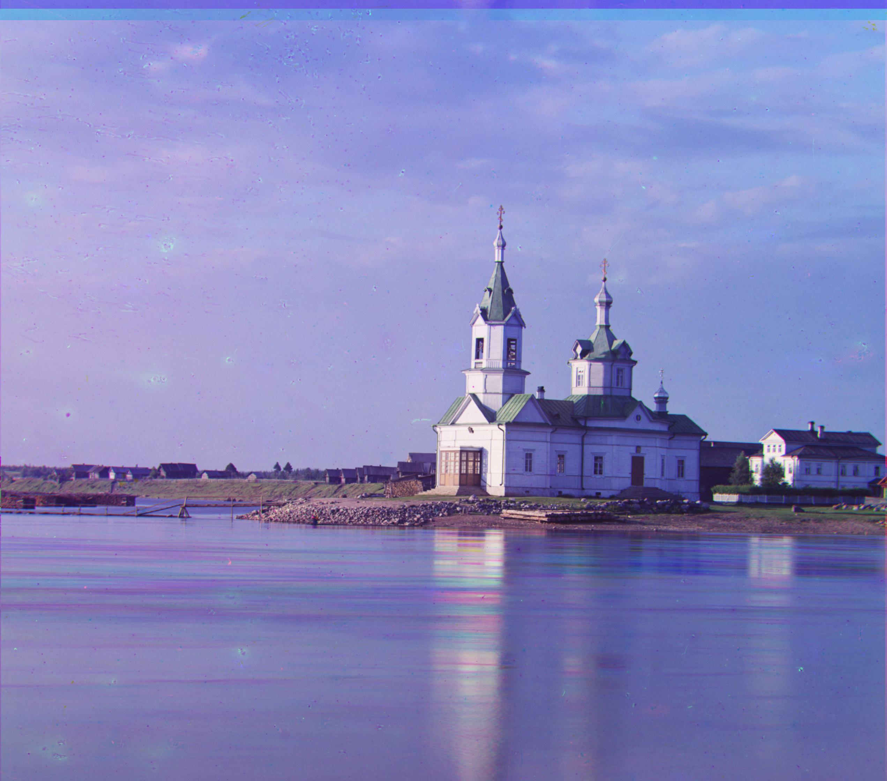

First, I implemented an exhaustive search to align the image channels for the provided jpeg images. Specifically, I wrote a function called align which takes in two image channels as inputs, as well as a range of how many pixels to search in each direction, and an offset for where to start searching. The function works by considering every possible displacement of one channel with respect to the other, starting from the provided offset and within the provided range (for example (-15, 15)). To "score" each possible displacement, I initially used Euclidean distance between the two arrays (one for each channel), then switched to Normalized Cross Correlation which had better results. However, as I will explain later, due to one particular image I changed align to first perform Sobel edge detection on each channel, and then compute the Euclidean distance between the detected edges. For the provided jpeg images, I just called align twice, passing in the blue channel as the reference both times with either the red or green channel as well. I additionally cropped each channel by 10% on each side in order to remove some borders which were causing my algorithm no not align the channels correctly. When calling align, I used an offset of zero with a range of 15 pixels. These were the resulting images:
For the larger TIF images, I implemented an image pyramid to align the channels, as just doing the exhaustive search would take too long for the larger images. Specifically, I created a recursive function called pyramid which itself calls the same align function used previously. The pyramid function takes in 2 channels, a range to search for possible displacements, and the number of levels to use for the image pyramid as parameters. The function downsamples each channel by a factor of 2, and then recursively uses the coarse displacement determined from the downsampled level and refines it by calling align and passing in that coarse displacement. This results in obtaining a more refined displacement without doing an exhaustive search at the current level. When recursively calling pyramid on the downsampled images, we must also divide the search range by 2, since each pixel in the downsampled image represents 2 pixels in the full sized image. Similar to previous part, I called the function twice, passing in the blue channel as the reference along with either the red or green channel. I also used 9 levels in the pyramids, with a search range of 30 pixels.
As mentioned earlier, the image that gave me the most trouble to align was the Emir of Bukhara. In my initial implementation where I used NCC on the raw pixel values for each channel, I was able to get almost all of the other TIF images to align well. I also cropped 15% from the edges of each channel which resulted in all of the images aligning well except for the Emir of Bukhara, which looked like this (tried to recreate it since I did not save the misaligned image at the time):
This is what led me to use Sobel edge detection on each channel in the align method, and then use the Euclidean distance between the results of the edge detection for each channel to "score" the alignment. This worked well for all other images, but the Emir was still not aligned correctly and looked the same as with my previous method. This led me to actually display the resulting edges from the edge detection on each channel. I that some of the prominent edges being detected were the vertical lines in the background, such as the one between the door and the wall, and the one between two different wall materials:
Because of this, I suspect that maybe these edges are more significant than the other edges being detected, and as a result, because the two different vertical lines would probably result in very similar edges, my algorithm might be aligning the different channels incorrectly by aligning different vertical edges from each one. For example, the edge between the door and wall in the red channel might be aligned with the edge between the two wall materials in the blue channel. Because of this, changed my function to use only horizontal Sobel edge detection, meaning only horizontal edges would be detected, ignoring the problematic vertical edges. Fortunately this fixed the issue, and the Emir was now aligned correctly. Luckily, this adjustment still worked on all of the other images.
The first Bell and Whistle addition I have already explained above, which was using edge detection to align the channels rather than working with the raw pixel values. For the second Bell and Whistle addition, I added automatic contrasting because I noticed that the some of the images looked a bit washed out, most notably the "melons" image where we can see that the very dark areas have a green haze over them, and it doesn't look as dark as it should. To do the auto contrasting, I added a function called adjust_contrast which takes one channel as input, and then shrinks or stretches the intensity levels using the rescale_intensity function from skimage. After some tweaking, I found that rescaling by using using the second percentile of intensity as 0, and the 98th percentile of intensity as 1, had good results. Below are some of the images that I found were most improved by this auto contrasting: left is before and right is after